Four steps to building an AI-powered design workflow
Build specialized agents for each design discipline
Code-first design system and agent templates
Orchestrate agents through a structured design process
Multi-layered QA with critique, heuristics, and accessibility
Six specialized skills, each trained for a specific design discipline
Runs market & user research using Claude's knowledge and internet sources. Trained on white papers, best practices, and research methodologies.
Reviews designs for broken paths and inconsistent workflows. Builds user flows, journey maps, and phased work plans for delivery.
Creates new design components during live sessions using semantic design conventions. Triggered automatically when the Product Designer needs a missing component.
Handles core UI design, interactive elements, content, and layouts. Pulls from the design system and delegates to Component Builder for missing pieces.
Two agents: Critique gives feedback on layout, hierarchy, and visual design. Heuristic evaluates against UX heuristics and best practices with criticality ratings.
Full accessibility review covering color contrast, ARIA attributes, keyboard controls, ADA affordances, and more. Final gate before completion.
Before the agents can design, they need a shared language
Built an entire design system from scratch using only a text prompt. Fed in the Beacon color palette — everything else was just me and a text box.
Created reusable templates that agents use as canvases for their output — structured formats that keep work consistent across sessions.
An orchestration agent manages the entire design process end-to-end
The orchestrator treats design like a structured workflow — not a single prompt. Each agent receives the artifacts from previous agents, maintaining context and building on prior work.
Each agent breaks features into sub-tasks, checks its own work, then hands off to the next stage
Agent creates a report to evaluate
User flows, journey maps, work plans
Click-through prototype build
Screen flow diagram for end-to-end review
Multiple review layers ensure the output meets professional standards
Multiple checks across the end-to-end experience. Categorized findings with criticality ratings. Can self-heal or await approval.
Research agent evaluates the prototype through the lens of customer value. Major findings trigger a re-run of the design pipeline.
Final pass to catch any missed contrast, ARIA, keyboard, or ADA issues introduced during iterations.
| # | Page | Issue |
|---|---|---|
| 1 | catalog.html | No empty state when filters return zero results — blank table body |
| 2 | catalog.html | Non-domain filter checkboxes (Source Type, Classification, Quality, Freshness) are placeholders — don't actually filter |
| 3 | catalog.html | Sortable column headers have no sort JS |
| 4 | quality.html | "Disabled" tab shows blank table — no empty state message |
| 5 | quality.html | Pagination buttons non-functional (no handlers) |
| 6 | security.html | "Auto-Fix" and "Classify" buttons — no handlers, no feedback |
Design, review, fix, repeat — until the experience is right
Key takeaways from running AI-augmented design workflows
Already powerful for getting to a well-informed prototype when teams need to test hypotheses quickly.
Research agents are great for teams with limited or no research support — but they're a complement, not a replacement.
Once ramped up, designers could operate without Figma. Claude can build new tools and ways of working on the fly.
More setup is needed for bidirectional work modes, but this approach could dramatically accelerate design system builds.
We still need to test within the walls of Capital One. These experiments ran on a personal machine with unfettered access.
The designer in the loop absolutely matters. Quality dramatically improves when we start from clear creative direction, and it still requires refinement throughout the process.
I've only begun to scratch the surface of what's possible with Claude.
Each artifact was generated through this workflow — click to explore
Code-first design system built from scratch using only a text prompt and the Beacon color palette.
View design system open_in_newResearch agent output that gets evaluated and fed to design agents as foundational knowledge.
View report open_in_newArchitect-built user flows and journey maps that inform the design direction.
View journey map open_in_newArchitect-generated delivery plan with phased work breakdown, design recommendations, and priorities.
View work plan open_in_newFull interactive prototype built by design agents with sub-task breakdown and flow validation.
View prototype open_in_newCanvas-based screen flow for exploring the end-to-end experience and evaluating each flow.
View screen flow open_in_new